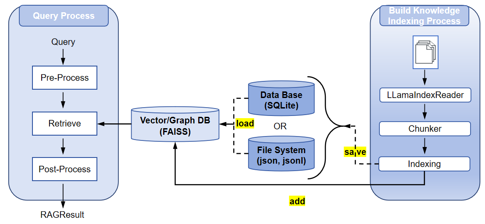

RAGEngine 模块文档¶
概述¶
RAGEngine 模块是检索增强生成（RAG）系统的核心组件，设计用于管理文档的索引、存储和检索，以实现高效的信息访问。基于 LlamaIndex 构建，它与多种存储后端（如 SQLite、FAISS、Neo4j）集成，并支持多种索引类型（如向量索引、图索引）。该模块是长期记忆管理框架的一部分，适用于需要高效处理和查询大型数据集的代理系统。
用途¶
RAGEngine 提供以下核心功能：
- 文档处理：从多种格式（如 PDF、文本）加载并分块文档。
- 索引管理：创建和管理索引以支持高效检索。
- 检索功能：支持基于元数据过滤和相似性搜索的查询。
- 存储管理：将索引持久化到文件或数据库以实现可扩展性。
它设计为与 StorageHandler 和 MemoryManager 组件集成，适用于需要上下文知识检索的代理系统。
主要特性¶
- 灵活的文档加载：支持从目录加载文件，提供可定制的过滤选项（如文件后缀、排除列表）。
- 分块与嵌入：自动将文档分块，并使用可配置的模型（如 OpenAI 的
text-embedding-ada-002）生成嵌入。 - 多索引支持：支持多种索引类型（向量、图）以满足不同检索需求。
- 高级检索：支持元数据过滤、相似性阈值和基于关键字的查询，采用异步和多线程检索。
- 存储集成：与 SQLite（用于元数据）、FAISS（用于向量嵌入）和 Neo4j（用于实体关系）无缝集成。
- 持久化：支持将索引保存到文件或数据库，确保数据持久性。
- 错误处理：提供健壮的日志记录和异常处理，确保操作可靠性。
RAG 流程概述¶
RAGEngine 的 RAG 流程包括四个主要阶段，确保信息的高效处理和检索：
- 文档读取：使用
LLamaIndexReader从指定文件路径或目录加载文档。支持处理多种文件格式（如 PDF、文本、Markdown），并提供可配置选项，如递归目录读取、文件后缀过滤和自定义元数据提取。 - 分块：使用指定的分块策略（如简单分块、语义分块、层次分块）将文档分割成较小的片段，确保嵌入和检索的文本段可管理。
- 向量索引构建：使用嵌入模型（如 OpenAI、ollama 或 Hugging Face）为分块生成嵌入，并构建索引（如向量索引或图索引）以实现高效存储和检索。索引存储在 FAISS、Neo4j 或 SQLite 等后端中。
- 检索：使用检索器（如向量检索器或图检索器）处理查询，应用预处理（如 HyDE 查询转换），检索相关分块，并对结果进行后处理（如重新排序或元数据过滤）。

配置详情¶
RAGEngine 依赖 RAGConfig 对象，该对象封装了 RAG 流程各阶段的配置。以下是详细的配置及其参数说明。
ReaderConfig¶
控制文档读取阶段。
| 参数 | 类型 | 默认值 | 描述 |
|---|---|---|---|
recursive |
bool |
False |
是否递归读取目录。设置为 True 以包含子目录。 |
exclude_hidden |
bool |
True |
排除隐藏文件和目录（例如，以点开头的文件）。 |
num_files_limit |
Optional[int] |
None |
读取文件的最大数量。设置为 None 表示无限制。 |
custom_metadata_function |
Optional[Callable] |
None |
从文件中提取元数据的自定义函数，允许用户定义元数据字段。 |
extern_file_extractor |
Optional[Dict[str, Any]] |
None |
特定文件类型（如 PDF、Word）的外部文件提取器。 |
errors |
str |
"ignore" |
错误处理策略："ignore" 跳过无效文件，"strict" 抛出异常。 |
encoding |
str |
"utf-8" |
读取文本文件时使用的编码。 |
ChunkerConfig¶
配置文档分块阶段。
| 参数 | 类型 | 默认值 | 描述 |
|---|---|---|---|
strategy |
str |
"simple" |
分块策略："simple"、"semantic" 或 "hierarchical"。决定文档如何分割。 |
chunk_size |
int |
1024 |
每个分块的最大字符数。较小的分块提高粒度但增加处理时间。 |
chunk_overlap |
int |
20 |
分块之间的重叠字符数，以保持上下文。 |
max_chunks |
Optional[int] |
None |
每个文档的最大分块数。设置为 None 表示无限制。 |
EmbeddingConfig¶
管理嵌入生成阶段。
| 参数 | 类型 | 默认值 | 描述 |
|---|---|---|---|
provider |
str |
"openai" |
嵌入提供者："openai"、"ollama" 或 "huggingface"。决定嵌入模型的来源。 |
model_name |
str |
"text-embedding-ada-002" |
嵌入模型名称（例如，OpenAI 的 "text-embedding-ada-002"）。 |
api_key |
Optional[str] |
None |
嵌入提供者的 API 密钥，某些提供者（如 OpenAI）需要。 |
api_url |
str |
"https://api.openai.com/v1" |
嵌入模型的 API URL，用于自定义端点（例如，OpenAI 使用 "https://api.openai.com/v1"，ollama 通常使用 "http://localhost:11434"）。 |
dimensions |
Optional[int] |
None |
嵌入模型的维度。必须与向量存储配置匹配。 |
normalize |
Optional[bool] |
True |
是否标准化嵌入（适用于 Hugging Face 模型）。 |
device |
Optional[str] |
None |
嵌入计算的设备（例如，"cuda"、"cpu"），适用于 Hugging Face 模型。 |
IndexConfig¶
配置索引阶段。
| 参数 | 类型 | 默认值 | 描述 |
|---|---|---|---|
index_type |
str |
"vector" |
索引类型："vector"、"graph"、"summary" 或 "tree"。决定存储和检索数据的结构。 |
RetrievalConfig¶
控制检索阶段，包括预处理、检索和后处理。
| 参数 | 类型 | 默认值 | 描述 |
|---|---|---|---|
retrieval_type |
str |
"vector" |
检索器类型："vector" 或 "graph"。指定检索机制。 |
postprocessor_type |
str |
"simple" |
后处理器类型，用于重新排序或过滤结果（例如，"simple"）。 |
top_k |
int |
5 |
查询中检索的顶部结果数量。 |
similarity_cutoff |
Optional[float] |
0.7 |
检索分块的最小相似度得分，过滤低相关性结果。 |
keyword_filters |
Optional[List[str]] |
None |
用于过滤检索分块的关键字，确保与特定术语的相关性。 |
metadata_filters |
Optional[Dict[str, Any]] |
None |
用于精确检索的元数据过滤器（例如，{"file_name": "doc.txt"}）。 |
使用说明¶
前置条件¶
- 安装依赖：
llama_index、pydantic以及其他所需库。 - 配置环境变量（例如，嵌入模型的
OPENAI_API_KEY）。参见 EvoAgentX 安装指南。 - 确保
StorageHandler实例已配置适当的存储后端（如 SQLite、FAISS、Neo4j）。
初始化¶
使用 RAGConfig 和 StorageHandler 初始化 RAGEngine。
from evoagentx.rag.rag import RAGEngine
from evoagentx.rag.rag_config import RAGConfig, ReaderConfig, ChunkerConfig, EmbeddingConfig, IndexConfig, RetrievalConfig
from evoagentx.storages.base import StorageHandler
from evoagentx.storages.storages_config import StoreConfig, VectorStoreConfig, DBConfig
# 配置存储
store_config = StoreConfig(
dbConfig=DBConfig(db_name="sqlite", path="./data/cache.db"),
vectorConfig=VectorStoreConfig(vector_name="faiss", dimensions=1536, index_type="flat_l2"),
graphConfig=None,
path="./data/indexing"
)
storage_handler = StorageHandler(storageConfig=store_config)
# 配置 RAG
rag_config = RAGConfig(
reader=ReaderConfig(recursive=False, exclude_hidden=True),
chunker=ChunkerConfig(strategy="simple", chunk_size=512, chunk_overlap=0),
embedding=EmbeddingConfig(provider="openai", model_name="text-embedding-ada-002", api_key="your-api-key"),
index=IndexConfig(index_type="vector"),
retrieval=RetrievalConfig(retrieval_type="vector", postprocessor_type="simple", top_k=10, similarity_cutoff=0.3)
)
# 初始化 RAGEngine
rag_engine = RAGEngine(config=rag_config, storage_handler=storage_handler)
核心功能使用¶
- 加载文档：
- 使用
read方法加载并分块文档到语料库。 -
示例：
-
索引文档：
- 使用
add方法将语料库或节点列表索引到指定索引类型。 -
示例：
-
查询：
- 使用
query方法根据查询字符串或Query对象检索相关分块。 -
示例：
-
删除节点或索引：
- 使用
delete方法删除特定节点或整个索引。 -
示例：
-
清除索引：
- 使用
clear方法清除特定语料库或所有语料库的索引。 -
示例：
-
保存索引：
- 使用
save方法将索引持久化到文件或数据库。 -
示例：
-
加载索引：
- 使用
load方法从文件或数据库重建索引。 - 示例：
使用示例¶
以下示例展示如何使用 RAGEngine 处理 HotPotQA 数据集，执行文档索引、查询和检索性能评估。examples/rag_engine.py
import os
import json
import logging
from typing import List, Dict
from collections import defaultdict
from dotenv import load_dotenv
from evoagentx.storages.base import StorageHandler
from evoagentx.rag.rag import RAGEngine
from evoagentx.core.logging import logger
from evoagentx.storages.storages_config import VectorStoreConfig, DBConfig, StoreConfig
from evoagentx.rag.rag_config import RAGConfig, ReaderConfig, ChunkerConfig, IndexConfig, EmbeddingConfig, RetrievalConfig
from evoagentx.rag.schema import Query, Corpus, Chunk, ChunkMetadata
from evoagentx.benchmark.hotpotqa import HotPotQA, download_raw_hotpotqa_data
# 加载环境变量
load_dotenv()
# 下载数据集
download_raw_hotpotqa_data("hotpot_dev_distractor_v1.json", "./debug/data/hotpotqa")
datasets = HotPotQA("./debug/data/hotpotqa")
# 初始化 StorageHandler
store_config = StoreConfig(
dbConfig=DBConfig(
db_name="sqlite",
path="./debug/data/hotpotqa/cache/test_hotpotQA.sql"
),
vectorConfig=VectorStoreConfig(
vector_name="faiss",
dimensions=1536,
index_type="flat_l2",
),
graphConfig=None,
path="./debug/data/hotpotqa/cache/indexing"
)
storage_handler = StorageHandler(storageConfig=store_config)
# 初始化 RAGEngine
rag_config = RAGConfig(
reader=ReaderConfig(
recursive=False, exclude_hidden=True,
num_files_limit=None, custom_metadata_function=None,
extern_file_extractor=None,
errors="ignore", encoding="utf-8"
),
chunker=ChunkerConfig(
strategy="simple",
chunk_size=512,
chunk_overlap=0,
max_chunks=None
),
embedding=EmbeddingConfig(
provider="openai",
model_name="text-embedding-ada-002",
api_key=os.environ["OPENAI_API_KEY"],
),
index=IndexConfig(index_type="vector"),
retrieval=RetrievalConfig(
retrieval_type="vector",
postprocessor_type="simple",
top_k=10, # 检索前 10 个上下文
similarity_cutoff=0.3,
keyword_filters=None,
metadata_filters=None
)
)
rag_engine = RAGEngine(config=rag_config, storage_handler=storage_handler)
def create_corpus_from_context(context: List[List], corpus_id: str) -> Corpus:
"""将 HotPotQA 上下文转换为用于索引的语料库。"""
chunks = []
for title, sentences in context:
for idx, sentence in enumerate(sentences):
chunk = Chunk(
chunk_id=f"{title}_{idx}",
text=sentence,
metadata=ChunkMetadata(
doc_id=str(idx),
corpus_id=corpus_id
),
start_char_idx=0,
end_char_idx=len(sentence),
excluded_embed_metadata_keys=[],
excluded_llm_metadata_keys=[],
relationships={}
)
chunk.metadata.title = title
chunks.append(chunk)
return Corpus(chunks=chunks, corpus_id=corpus_id)
def evaluate_retrieval(retrieved_chunks: List[Chunk], supporting_facts: List[List], top_k: int) -> Dict[str, float]:
"""评估检索分块与支持事实的匹配情况。"""
relevant = {(fact[0], fact[1]) for fact in supporting_facts}
retrieved = []
for chunk in retrieved_chunks[:top_k]:
title = chunk.metadata.title
sentence_idx = int(chunk.metadata.doc_id)
retrieved.append((title, sentence_idx))
hits = sum(1 for r in retrieved if r in relevant)
precision = hits / top_k if top_k > 0 else 0.0
recall = hits / len(relevant) if len(relevant) > 0 else 0.0
f1 = 2 * (precision * recall) / (precision + recall) if (precision + recall) > 0 else 0.0
mrr = 0.0
for rank, r in enumerate(retrieved, 1):
if r in relevant:
mrr = 1.0 / rank
break
hit = 1.0 if hits > 0 else 0.0
intersection = set((r[0], r[1]) for r in retrieved) & relevant
union = set((r[0], r[1]) for r in retrieved) | relevant
jaccard = len(intersection) / len(union) if union else 0.0
return {
"precision@k": precision,
"recall@k": recall,
"f1@k": f1,
"mrr": mrr,
"hit@k": hit,
"jaccard": jaccard
}
def run_evaluation(samples: List[Dict], top_k: int = 5) -> Dict[str, float]:
"""在 HotPotQA 样本上运行评估。"""
metrics = defaultdict(list)
for sample in samples:
question = sample["question"]
context = sample["context"]
supporting_facts = sample["supporting_facts"]
corpus_id = sample["_id"]
logger.info(f"处理样本：{corpus_id}，问题：{question}")
corpus = create_corpus_from_context(context, corpus_id)
logger.info(f"创建了包含 {len(corpus.chunks)} 个分块的语料库")
rag_engine.add(index_type="vector", nodes=corpus, corpus_id=corpus_id)
query = Query(query_str=question, top_k=top_k)
result = rag_engine.query(query, corpus_id=corpus_id)
retrieved_chunks = result.corpus.chunks
logger.info(f"查询检索到 {len(retrieved_chunks)} 个分块")
sample_metrics = evaluate_retrieval(retrieved_chunks, supporting_facts, top_k)
for metric_name, value in sample_metrics.items():
metrics[metric_name].append(value)
logger.info(f"样本 {corpus_id} 的指标：{sample_metrics}")
rag_engine.clear(corpus_id=corpus_id)
avg_metrics = {name: sum(values) / len(values) for name, values in metrics.items()}
return avg_metrics
if __name__ == "__main__":
samples = datasets._dev_data[:20]
print(len(datasets._dev_data))
avg_metrics = run_evaluation(samples, top_k=5)
logger.info("平均指标：")
for metric_name, value in avg_metrics.items():
logger.info(f"{metric_name}: {value:.4f}")
with open("./debug/data/hotpotqa/evaluation_results.json", "w") as f:
json.dump(avg_metrics, f, indent=2)
接口列表¶
| 方法 | 描述 | 参数 | 返回值 |
|---|---|---|---|
__init__ |
初始化 RAGEngine，配置 RAG 和存储处理程序。 | config: RAGConfig, storage_handler: StorageHandler |
无 |
read |
加载并分块文档到语料库。 | file_paths, exclude_files, filter_file_by_suffix, merge_by_file, show_progress, corpus_id |
Corpus |
add |
将节点添加到指定语料库的索引中。 | index_type, nodes, corpus_id |
无 |
delete |
删除语料库中的节点或整个索引。 | corpus_id, index_type, node_ids, metadata_filters |
无 |
clear |
清除特定语料库或所有语料库的索引。 | corpus_id |
无 |
save |
将索引保存到文件或数据库。 | output_path, corpus_id, index_type, table |
无 |
load |
从文件或数据库加载索引。 | source, corpus_id, index_type, table |
无 |
query |
执行查询并返回处理后的结果。 | query, corpus_id, query_transforms |
RagResult |
注意事项¶
- 查询转换：
query方法支持可选的查询转换用于预处理，可自定义以增强检索效果（例如，HyDE、查询分解）。 - 存储后端：确保
StorageHandler正确配置以处理向量和元数据存储。 - 警告：多次加载索引可能导致问题（如向量存储中重复插入节点）。在重新加载前清空索引。